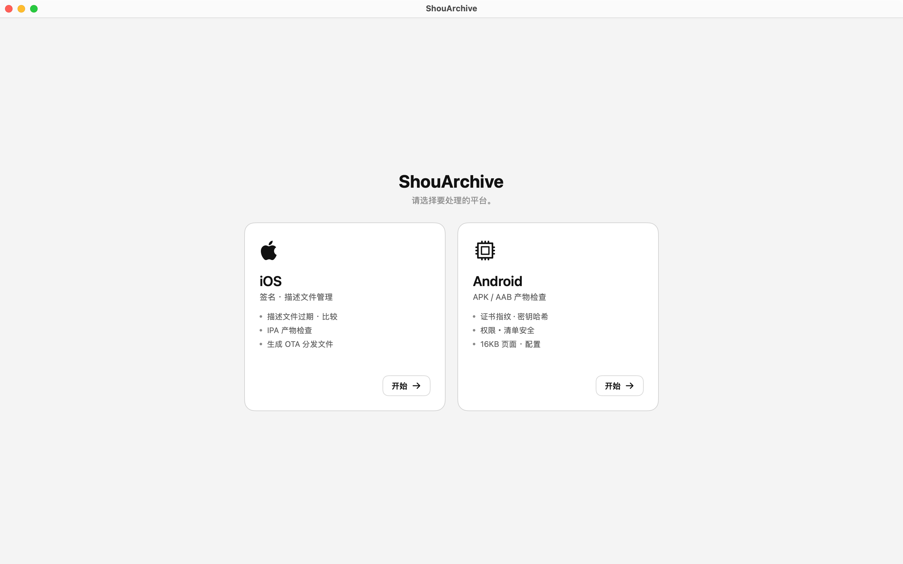
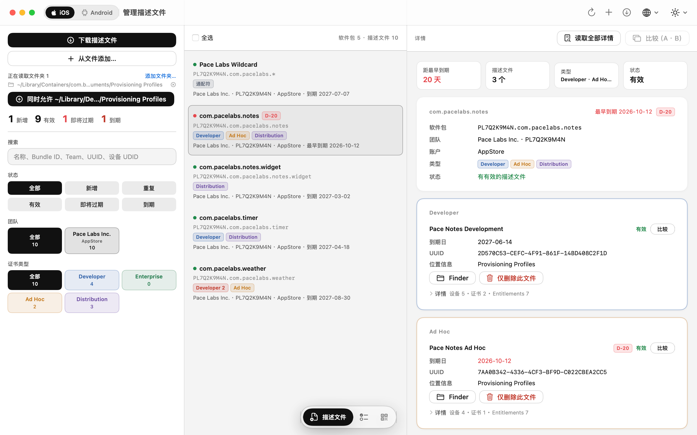
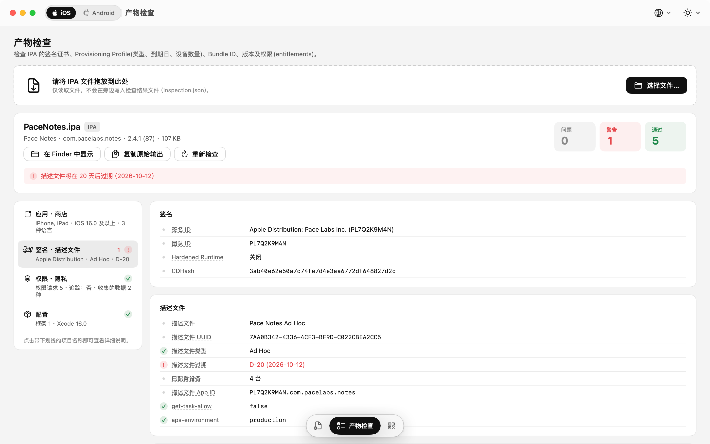
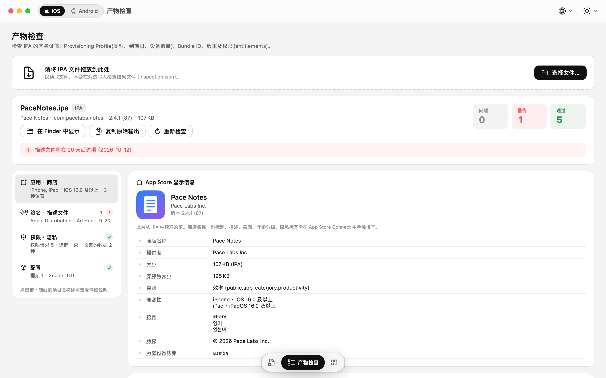
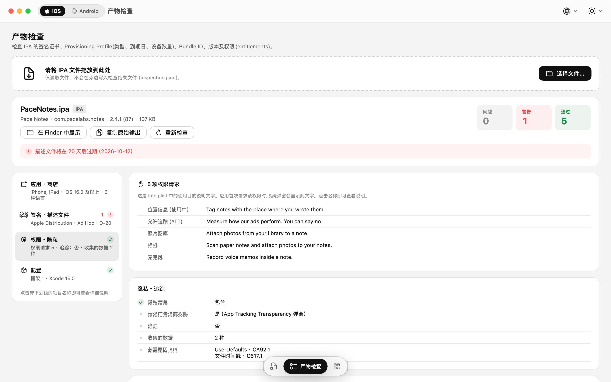
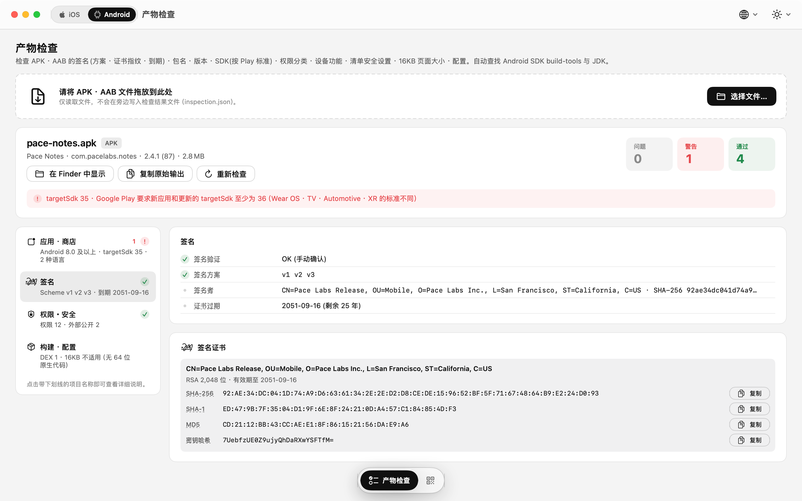

已安装的描述文件
- 每一行都有 D-N 到期徽章——30 天内显示橙色，过期后显示红色
- 筛选：全部 · 新增 · 重复 / 有效 · 即将过期 · 到期
- 详情视图：设备 UDID、内嵌证书（SHA-1 · SHA-256）和 Entitlements，均可复制
- 并排比较两个描述文件——列出有差异的设备、证书和 Entitlements
- 拖入
.mobileprovision文件即可添加；多选可批量删除
描述文件与产物检查——发布前的最后一道检查，一款应用全部搞定。
打开 IPA、APK 或 AAB，即可看到商店将展示的信息、签名方式以及申请的权限。按到期日期把描述文件管理得井井有条。你的文件从不离开 Mac。
macOS 15 Sequoia 或更高版本 · 支持 Apple Silicon 与 Intel
描述文件
一眼看清 Xcode 安装的所有描述文件。添加 App Store Connect API 密钥后，下载、创建、续期描述文件都无需离开应用。
.mobileprovision 文件即可添加；多选可批量删除只需 Issuer ID、Key ID 和 .p8 文件。密钥保存在你的 Mac 上，请求令牌在本地签名。
产物检查
拖入文件即刻解析，无需任何外部工具。从商店页面信息到签名、权限和安全设置，每一项都附有通俗易懂的说明。
可以直接从构建产物中读出的产品页面信息。
…UsageDescription）——为空时会给出警告只读。文件不会被修改，不会在它旁边写入任何内容，也不会上传到任何地方。
界面
浅色、深色或系统设置主题，文本大小 85 – 150 %。通过窗口底部的图标菜单切换标签页。






系统要求